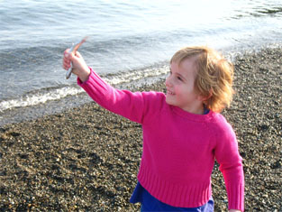
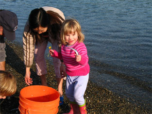
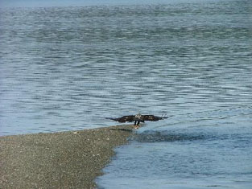

|
During yesterday's beautiful spring day, my husband Steve had the chance to take some pictures of eagles fishing off the sandspit for herring, It would be nice to see those pictures on the HMC website,thank you.  
On Wednesday there was much excitement off N. Beach as Herring swam in swarms by the island. (Heck I do not know the correct lingo). At one time there were as many as a dozen eagles diving for the small fish while a couple of large sea lions kept them trapped within the inlet there at the spit... the sea lion would herd them toward shore and they would get beached and the seagulls would feast upon them. While riding the ferry without my camera... I watched the many eagles diving for them. When I got back to the island and got my camera I was only able to catch the one juvenille eagle on camera and the seagulls... it was a beautiful calm day and in the photos where the water appears rough it is filled with herring running for their lives then the water gets shallow and they are washed ashore.  |